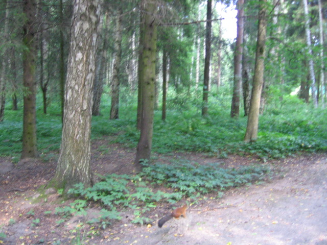

Naminės voverės?

Senais laikais buvau nuvykęs į Rusiją (Sankt Perterburgą), pas gimines, turėjau galimybę aplankyti daug muziejų
Kartą buvaiu nuvykęs į Puškiną (Peterburgo priemėsti), kuris yra įžymus savo parku
Pagrindinė įžymybė ta, kad atėjęs link parko, nusiperki riešutų ir vaikščiodamas parke, tais reišutais gali maitinti voveres. Jo yra tokios nebaigščios, kad gali maitinti iš rankos.